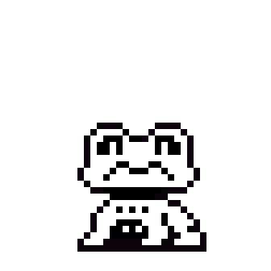
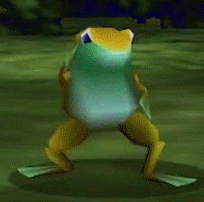

Hey all! I hope you're having a good summer. We have a lot of good stuff prepared for you today!
This is our first newsletter, and my first time programming a website really, so I hope you enjoy this
fun little site.
In terms of development, UNDERTALE Funk-Mode is going well! Aside from minor complications when
it comes to people's personal lives interfering with work, we haven't let anything get in the way of
creating the best mod possible.
We hope you enjoy the final product, but even more so, we're thankful for your patience and the
care and respect you've shown us. We will eternally be grateful for you all, and we can't wait for you
to get a chance to play this mod.
With that said, enjoy the rest of the newsletter! I'll see you in the next section.

The State of the OST
Well, here it is! The OST discussion.
Music is one of the most important parts of a Friday Night Funkin' mod. Shocker, I know. But I'm
glad to say that Undertale Funk-Mode is in good hands.
The team has four lead composers. Me (ZachDK), GontheGhost, Spunky Tunky, and Soba Noodles. We,
alongside many of the other composers, have been working very hard to contribute to this mod and make
it's OST the best it can be.
I'm very proud of our work, and we can't wait to get all of this out to you. Undertale:
Funk-Mode has really been a wonderful experience to work on. I've learned and improved with each passing
day, working on this mod. I hope you guys learn
and improve as well, in your own personal projects. It's thanks to you all that we can even make this
mod!
Here are some of the songs we've been given permission to show you.
Enjoy!
SONG TEASER 1
Title: ???
Composers:
ZachDK,GontheGhost, & SobaNoodles
SONG TEASER 2
Title: Perseverance
Composer:
ZachDK
SONG TEASER 3
Title: Croak
Composer:
ZachDK, ft. Glintfish
SONG TEASER 4
Title: Laugh Track
Composer: SpunkyTunky
And with that, we have shown off all of the OST we are legally allowed to show you!
Damn, this mod has been in the works for an entire year now. Its kinda crazy to think about!
Ive been in this community for around 4 years now, and to think about how Funk Mode has been here
for a fourth of it is... idk! Weird i guess?
But a good kind of weird. Time flies by fast!
I know you didn't come here to read about my life story so I'll cut it short and move onto the
coding for the mod.
Lets not beat around the bush, coding is the main thing keeping this mod from coming out. Who would've
guessed that coding is really hard!
Generally the thing thats been the biggest issue is planning ahead. We as the coders wanna make the
mod as easy as possible to develop for,
so that future updates can come out faster, but that also means a lot of planning, a lot of rewrites and
refactors, and a LOT of code...
Although, not really.
Im not going to lie, im an optimization nut. I love optimizing and squeezing as much performance
as i can out of literally anything, and
im especially doing it now because i want EVERYONE to be able to experience Funk Mode without any
issues.
As of writing (3. May 2025.), the mod has ~3200 lines of code. compared to Psych 0.7.3's ~31000
or our old engines ~10000,
and you can see the difference! I didn't want useless code and random stuff cluttering the codebase, so
we ended up switching engines
to one I was in the process of working on, which turned out to be a huge success!
Everything is insanely modular, easy to work with and understand, and also DOCUMENTED, unlike
literally every other FNF mod / engine out there.
I dont wanna sound like im bragging, but im just insanely happy with the way everything was done for
this mod.
Now back to the actual progress. Again, as of writing, I just finished the mods new overworld
implementation, and it works like a charm.
Honestly, we don't really have that much stuff left to finish! Unfortunately, I am usually the one
pulling most of the weight as our other coders
are fairly busy, but I don't mind that- I like working on Funk Mode!
this is what it looked like before glint fixed it LMAO
- Zach
I am thinking about open sourcing Funk Mode once it releases, but at the same time, I don't want
people blatantly stealing all my hard work,
which is what the community usually does. I dunno, we'll see when the time comes!
That's it for now, thanks for reading!
* The dummy needs time to concentrate.....
btw glint made these sexy ass scripts that is so insanely modular it's fucking wild LMAO
- Zach
oh and then this happened
- Zach
Coding Struggles pt. 2 - The Website
Written by the programmer of this website,
ZachDK.
Hey there!
As one of the mod's lead composers and the sole developer maintaining this website, I've got
some stories to share.
First off, I'll admit the website link is a bit long—sorry about that! It's hosted through
GitHub Pages,
and I'm not exactly eager to pay for a custom domain…
This newsletter has been a long time coming. I've been working on it for months. Originally, it was
meant to be a Spring Newsletter,
but as you can clearly see, it's turned into…
not...
that.
I've done my best to make it readable and user-friendly. I hope my efforts aren't in
vain, lmao
Like Glintfish mentioned, I've also been working to make it modular and easy to navigate. While
I'm currently the only
person working on this site, I'm deliberately designing the code so that if someone ever joins me, it'll
be clear and
easy for them to understand!
UNDERTALE Funk-Mode is honestly the first mod I've ever worked on, and it has been a BLAST lemme
tell ya.
The dev team is so kind, and Gian and Danon have bene AMAZING directors! I honestly feel at home
here—which is good for a mod of this scale.
This website has had it's code deleted and remade
multiple times over at this point,
and I'm pretty proud of how it looks right now!
There isn't really much else for me to say, to be honest. I suppose I could share some screenshots
Glintfish shared with me
on the progress of coding the mod!
But that's it for coding struggles! I don't really have much else to say other than getting that video
to work was a pain.
* You feel a totally random urge to pay robux for funk mode skins...in robox...
* pico is here too, by the way. this is your consicence speaking, you should pay robux for them. lol
Pico is officially confirmed for the mod. With luck, he will appear in the upcoming demo.
We already have a good couple of ideas for him, with some things in the works.
Pico's story will be centered around the events of Undertale Yellow, but will have fewer songs compared
to that
of Bfriend.
On the topic of playable characters from the FNF universe, we still don't have anything for
anyone else.
We know that there are people who want to see Nene or even Senpai, but there are currently no plans
for them.
Our priority is for the main gameplay to be finished first, and the playable characters second.
Even so, if we find a couple ideas and ways to include them, you can trust that Pico won't
be the only character featured in the mod!
Gameplay Teasers & Unused Content
This section will focus primarily on gameplay teasers for those of you who want to see how the gameplay
looks.
We've been hard at work on the mod, and while the overworld is our primary focus currently, don't think
we've
forgotten about the music and art!
Unused Versions of Your Best Guide
This one went unused because it didn't fit the vibe of Your Best Friend. A little too...somber?
This is the first version of Your Best Guide that I made. I'm actually kind of happy with it,
though that doesn't change that a better version exists now.
GIF of a Frog Dancing and Unused Versions of Croak

This was a very basic mockup for Croak, made with a couple silly synths.
It's basically just wish.com Enemy Approaching.
Unused attempt at Croak v3.
Unused Newsletter Content
Unused Newsletter Theme #1: "Uwa!! So Funky~"
Unused Newsletter Theme #2: "Newsbopper Version 1"
Unused Newsletter Theme #3: "Newsbopper Version 2"
All of these were supposed to play as you browsed the newsletter, but I wasn't
able to find a way to have them stop playing once listening to something else in the newsletter.
Because of this, the newsletter is now silent. However, I wanted to keep these here as unused content
because I actually like them. Especially that first one, I think it's a nice little rendition of
"Uwa!! So temperate".
Now...
Time for the juiciest of unused songs...........
Cancelled Sans song.
I guess that's just how Sans songs go, I guess...
With that said, that's it for the gameplay teasers and unused content!
We're eternally grateful for your continued support and patience.
Thank you, and have a wonderful night everyone.
If you want to return to the newsletter hub, you can just click this link.


")


 btw glint made these sexy ass scripts that is so insanely modular it's fucking wild LMAO
btw glint made these sexy ass scripts that is so insanely modular it's fucking wild LMAO


 But that's it for coding struggles! I don't really have much else to say other than getting that video
to work was a pain.
But that's it for coding struggles! I don't really have much else to say other than getting that video
to work was a pain.